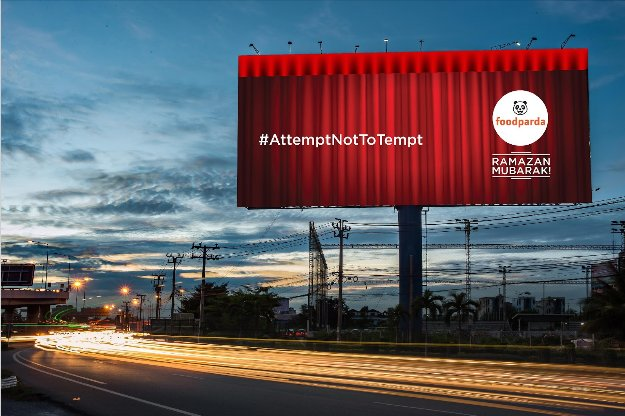
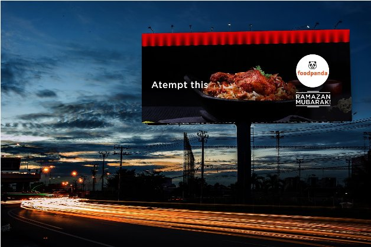
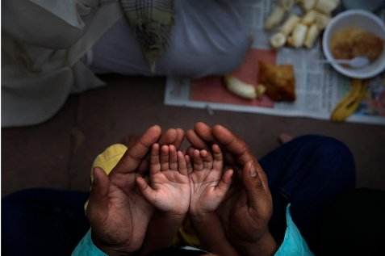
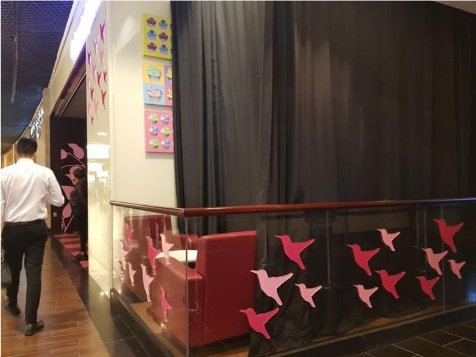

Proactive Work · Ideas · Thinking
Work made without a brief, or well beyond what the brief asked for. This is where the thinking lives.
During Ramadan, Foodpanda's billboards drew curtains over themselves. The logo became "foodpaRda." An act of cultural empathy that turned restraint into the most-talked-about OOH of the month.
The insight: during Ramadan, Muslims fast from sunrise to sunset — avoiding not just food, but the temptation of it. Old-school Indian restaurants used to hang curtains over their windows in solidarity. That practice had largely disappeared.
Foodpanda would revive it — at scale, across their outdoor media. From sunrise to sunset, every billboard would be covered. The food imagery hidden. The logo transformed. Only revealed at Iftaar — when the fast breaks.
A food delivery company advertising by not showing food. The idea did the brand's job better than any product message ever could.


The stage was curtained. The music only started when a target weight of beach plastic had been collected. Sustainability as spectacle, not sermon.
The world's beaches are covered in plastic. Corona asked: how do you make cleaning them up fun? The answer was to make it a transaction — not guilt, but anticipation.
Free concert. Headlined by the biggest names in music. Tickets cost nothing. But the curtain only rises when the beach is clean. A weigh-scale drives the reveal in real time. The crowd moves together toward the moment.
The beach gets cleaned. The concert becomes a story. The brand earns its place in it without saying a word about the planet.
Mumbai's Ganesh festival faced a noise ban. Google's answer: Bluetooth speakers, A-list DJs, and 10,000 people dancing silently through the streets.
Every year, the Ganesh Visarjan — the procession where devotees carry the idol to the sea — fills Mumbai with music and celebration. The Bombay High Court imposed noise restrictions. The debate was tense.
Google could be the solution. Partner with a major Pandal, distribute Bluetooth headsets, and host a silent rave through the streets of Mumbai. Devotees dance in sync. The city stays quiet. The procession is louder than ever — just in your ears.
Technology as cultural bridge, not cultural replacement.


Every winter, India's highways see horrific pile-ups in dense fog. Zero visibility. Zero warning. Google Maps already had everything it needed to fix this.
4G connectivity. Phone-to-phone signals. Existing GPS data. A simple Maps update that turns every phone on a foggy highway into a node — broadcasting whether the car ahead is moving or stopped, whether there's danger at the distance.
No new hardware. No new infrastructure. Just a feature update that uses what's already in every Indian driver's pocket. A human problem solved with technology that already existed.
A web tool that showed consumers exactly how much plastic their current skincare brand used. Sustainability as utility, not guilt.
Today's consumers want to make better choices but don't have the information to do so. The Nivea Plastic Counter solved this — enter your current skincare brand, see its plastic footprint, compare it to Nivea Naturally Good.
Nivea always came out cleaner. The brand didn't need to say it. The data said it. Advertising that told the truth so plainly that it didn't feel like advertising at all.
Not a product ad. An inquiry. Built without a brief because the brand deserved better than what briefs usually produce.
Hästens makes the most extraordinary beds in the world. The brief, if there had been one, would have said: sell the bed. The campaign instead asked: what are we actually selling? Not a product. A philosophy of rest.
What is sleep? Not the eight hours. Not the mattress. The conversation that starts there — about recovery, consciousness, the third of your life you spend horizontal and what you owe it. A campaign that positions Hästens not as a luxury purchase but as an intellectual position.